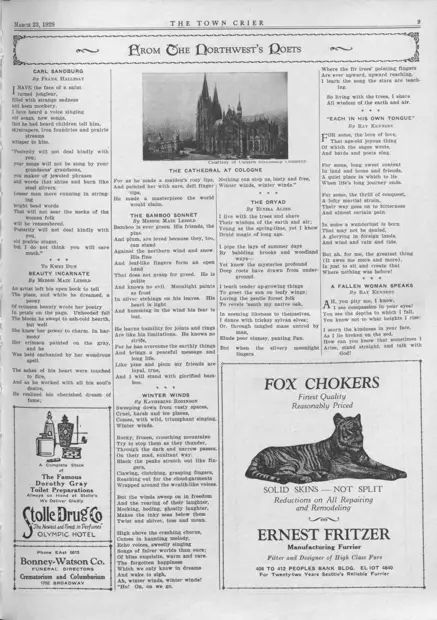

Beauty Incarnate
访问原网页 ↗Visit original website ↗

S144 · Meddie Maze Lebold / The Town Crier · 1929-03-23
诗歌版把 Beauty Incarnate 署给 Meddie Maze Lebold，题赠语为 To Kwei Dun。它是同时代诗人写给滕的作品。The poetry page prints Lebold’s Beauty Incarnate with the dedication To Kwei Dun. It documents a contemporary poet’s response, with Lebold credited as author.
馆藏图像与原文Archived images and documents

原始网址Original URL
https://cdm16118.contentdm.oclc.org/digital/collection/p16118coll23/id/17356